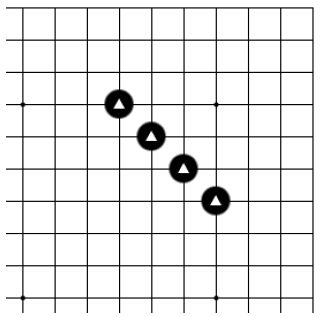
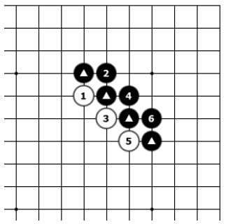

第三节 特殊棋形
有一些特殊的棋形，自身并没有连接在一起，但是对方却无法切断它。

基本图

图一
基本图：黑△四子在围棋术语中叫作“小尖”。我们发现，黑△四子并没有连接在一起，但是白棋却无法切断黑棋，如图一。
图一：白1、3、5连续三步棋都是试图切断黑△四子，但是却被黑2、4、6牢牢地连接在了一起。让我们继续看图二。

图二
图二：白1、3、5如果从另一边试图切断黑△四子，结果是相同的。黑2、4、6又是坚实地连接在了一起。
那么“小尖”到底算不算是连接在一起的一块棋呢？
答案：算是一块棋。“小尖”是比较特殊的棋形，虽然对手一步棋无法将它切断，但是它连接得也并不牢固！如图二、图三，当对方试图切断你的时候，你必须得马上补住自己的断点，这就导致你非常被动，容易被对方牵着走！